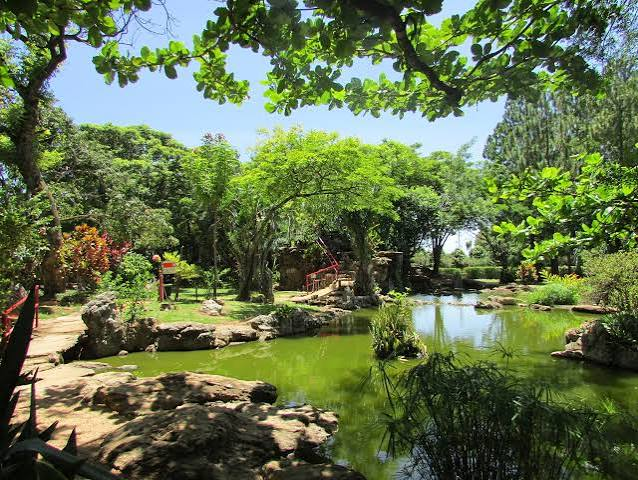

Debora Queiroz
Sobre Mim
Sou estudante de Desenvolvimento Web na BYU-Pathway, atualmente cursando WDD 131. Tenho interesse em criar sites funcionais e bem organizados, aplicando boas práticas de HTML, CSS e JavaScript.
Caldas Novas, Goiás

Caldas Novas é uma cidade muito especial para mim. Conhecida por suas águas termais naturais, é um dos maiores complexos de fontes quentes do mundo, atraindo visitantes de todo o Brasil em busca de descanso, lazer e bem-estar em suas piscinas termais.